Córtex Estudos · 4º Semestre · Anatomia Topográfica · Aula 09
Lesões Nervosas do Membro Superior
Por que o nervo periférico regenera (e o central não), como se sutura e se enxerta um nervo, a construção do plexo braquial raiz por raiz — e as lesões: Erb-Duchenne com a mão do garçom, Klumpke com a garra e a síndrome de Horner, a paralisia obstétrica, e as síndromes de cada nervo terminal: a mão em bênção do mediano, o túnel do carpo, o túnel cubital do ulnar e a mão caída do radial.
1 · O nervo por dentro: epineuro, perineuro, endoneuro
As bainhas do nervo — de fora para dentro
- 1EPINEURO (externo e interno) — o envelope macroscópico do nervo (25–75% do volume), o que se vê e se segura na peça.
- 2PERINEURO — envolve cada FASCÍCULO (grupo de axônios) — controla a difusão iônica, protege contra infecção, mantém a pressão positiva.
- 3ENDONEURO — em volta de cada axônio, formando o tubo das CÉLULAS DE SCHWANN.
- 🎯 Por que o nervo PERIFÉRICO regenera? Porque o endoneuro tem CÉLULA DE SCHWANN. No sistema nervoso central é o oligodendrócito — e não regenera. "Qualquer lesão nervosa periférica é potencialmente recuperável."
2 · Neurorrafia: suturando o "tecido condutivo"
- As suturas possíveis: EPINEURAL externa, epineural interna e PERINEURAL (a mais delicada, fascículo a fascículo — microcirurgia).
- 🎯 A lógica: suturar o tecido condutivo para CANALIZAR a regeneração — "senão cresce aleatoriamente".
- Mesmo com sutura perfeita, a ordem das fibras se perde: quando o crescimento chega às placas motoras, o mapa cerebral está "com as vírgulas trocadas" — o paciente comanda o polegar e mexe outro dedo. Daí a FISIOTERAPIA prolongada (às vezes um ano) para o cérebro reaprender. O sensitivo recupera mais rápido que o motor (é território, não placa).
3 · Degeneração, prazos e a fisioterapia do cérebro
- Degeneração DISTAL = WALLERIANA (centrífuga): perde-se tudo abaixo da lesão. Há também a proximal (axônica, centrípeta) — e a degeneração MUSCULAR: aos 3 meses já há sinais de fibrose muscular.
- 🎯 Os números da aula: reinervar idealmente entre 1 e 3 meses · reinervação funcional em 1–3 anos · não se espera reinervação após 3 anos · regeneração a 1–2 mm/dia.
- Nervos de placa motora "marcada" (face, laringe) exigem reparo rápido; nervos grandes toleram mais espera.
4 · Enxertos de nervo: de onde tirar
- Perdeu-se um segmento (esmagamento, arma branca)? Enxerta-se um nervo doador — 🎯 melhor enxerto do que sutura sob tensão; em condições favoráveis, sutura e enxerto empatam. O leito precisa ser bem vascularizado (os vasa nervorum alimentam a célula de Schwann).
- Doadores clássicos: 🎯 NERVO SURAL (o grande doador — sensibilidade posterior da perna, "perder sensibilidade é o de menos", acesso fácil) · SAFENO · cutâneos medial e lateral do antebraço · ramo superficial do radial · ulnar quando se precisa de calibre.
5 · Neuropraxia, axonotmese, neurotmese
| Tipo | O que é | Exemplo da aula |
|---|---|---|
| NEUROPRAXIA | interrupção TEMPORÁRIA da condução (compressão → isquemia dos capilares → edema), sem lesão estrutural | a mochila pesada; a paralisia facial periférica virótica (edema no forame estilomastóideo) |
| AXONOTMESE | lesão PARCIAL do axônio e da mielina, com os tubos conjuntivos preservados | compressões mais graves, tração |
| NEUROTMESE | ROTURA COMPLETA do nervo | laceração, avulsão — precisa de cirurgia |
6 · Onde o plexo rompe: pré × pós-ganglionar
- +90% das lesões do plexo são traumáticas (o resto: neoplasias, anomalias) e a maioria é SUPRACLAVICULAR — o plexo emerge entre os escalenos anterior e médio, e é ali, na margem do escaleno, que as raízes costumam romper. Também há lesões retroclaviculares (fascículos) e infraclaviculares (divisões/ramos).
- 🎯 PRÉ-GANGLIONAR = AVULSÃO da raiz no forame intervertebral — gravíssima: acesso complicadíssimo, prognóstico ruim. PÓS-GANGLIONAR = a que se espera: viável, acessível, operável.
- Mecanismos: trauma direto, tração por hiperabdução (a queda segurando a barra — o coracoide e o tendão do peitoral menor viram fulcro sobre o plexo), compressão. (A síndrome do desfiladeiro fica na aula própria — lá é vascular + nervo.)
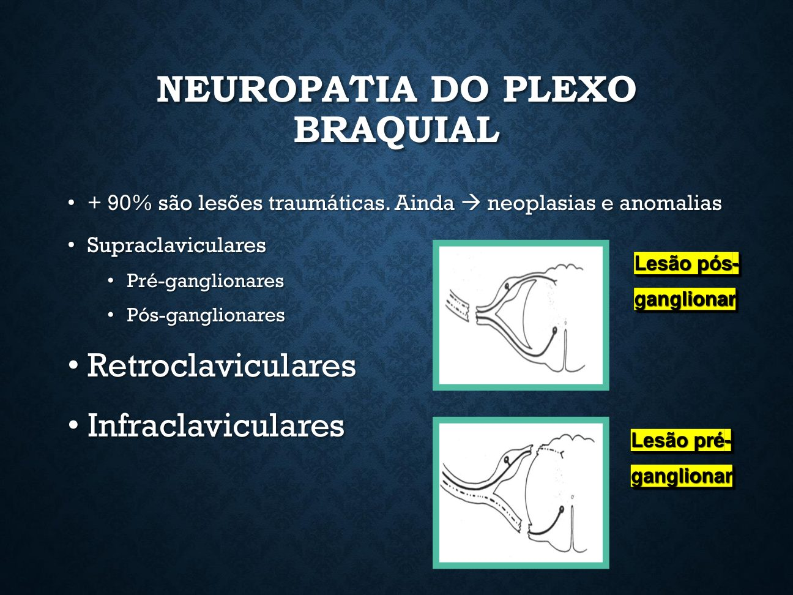
7 · A construção do plexo braquial
- TRONCOS: SUPERIOR = C5+C6 · MÉDIO = C7 (sozinho) · INFERIOR = C8+T1. 🎯 PRÉ-FIXADO = contribuição de C4 · PÓS-FIXADO = contribuição de T2 — o comum nos cadáveres do laboratório, com o intercostobraquial (do 2º espaço intercostal) se juntando ao cutâneo medial do braço.
- DIVISÕES: cada tronco dá uma anterior e uma posterior. Todas as POSTERIORES convergem → FASCÍCULO POSTERIOR = C5-C6-C7-C8-T1 (completo). Anteriores do superior + médio → FASCÍCULO LATERAL (C5-C7). Anterior do inferior sozinha → FASCÍCULO MEDIAL (C8-T1).
- Relação cobrada na prova de axila: os fascículos lateral e medial "abraçam" a artéria axilar (as raízes do mediano na frente dela) e o posterior fica atrás.
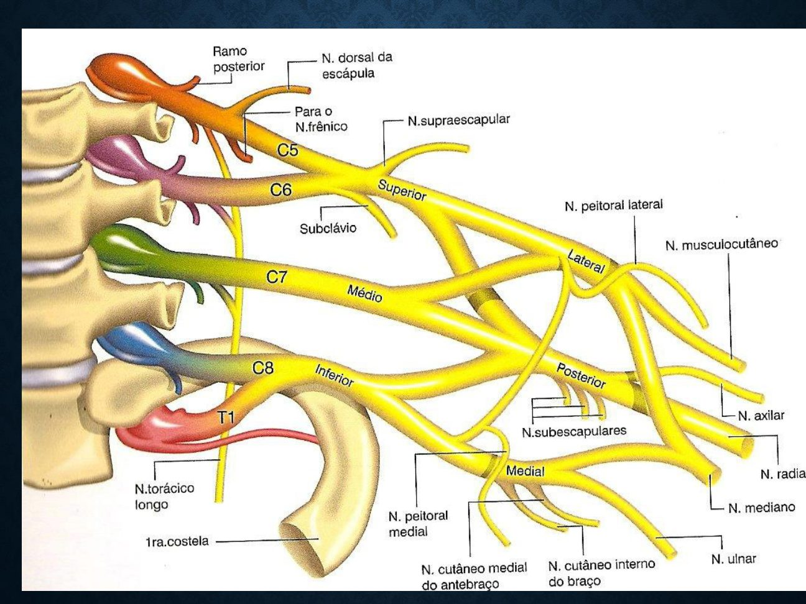
8 · Ramos terminais e colaterais: quem vem de quem
| Nervo | Raízes (versão da aula) | Detalhe |
|---|---|---|
| MUSCULOCUTÂNEO | C5-C7 | 🎯 motor até a fossa cubital — e continua como CUTÂNEO LATERAL DO ANTEBRAÇO |
| AXILAR | C5-C6 | deltoide + redondo MENOR |
| RADIAL | C5-T1 (completo) | todo o compartimento posterior |
| MEDIANO | C6-T1 (sem C5) | raízes lateral + medial na frente da artéria axilar |
| ULNAR | C8-T1 | do fascículo medial |
- Colaterais: TORÁCICO LONGO (C5-C7) → serrátil anterior · DORSAL DA ESCÁPULA (C5) → romboides + levantador · SUPRAESCAPULAR (tronco superior) → supra e infraespinal · peitorais lateral/medial (dos fascículos homônimos) · subescapulares superior e inferior (C5-C6, fascículo posterior) → subescapular + redondo MAIOR · TORACODORSAL (C6-C8) → latíssimo do dorso — 🎯 "o músculo do NADADOR": latíssimo estende o braço, peitoral maior flexiona.
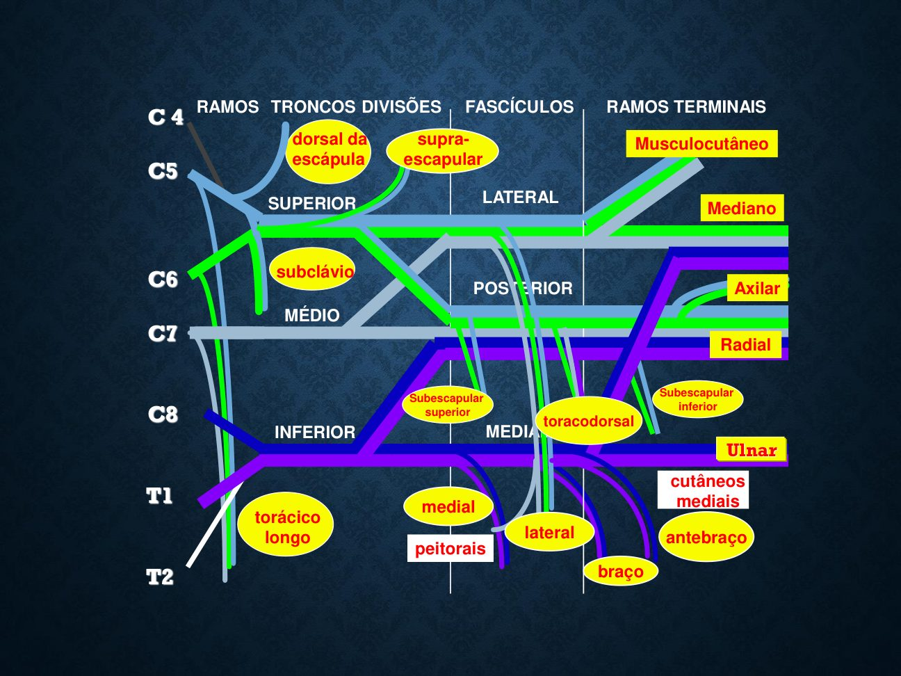
9 · Erb-Duchenne: a paralisia alta e a mão do garçom
- PARALISIA ALTA (C5-C6, às vezes C7 — tronco superior): 80–90% dos casos, a mais comum — e a de MELHOR prognóstico (acesso cirúrgico fácil ao tronco superior).
- Nervos comprometidos: supraescapular, axilar, musculocutâneo, radial (parte alta), subescapulares. Músculos: supra/infraespinal, deltoide, redondo menor, bíceps, braquiorradial, extensores radiais do carpo, supinador.
🎯 A postura — cada peça explicada
- 1Braço caído, ADUZIDO, sem movimento — perdeu deltoide (axilar) e supraespinal.
- 2OMBRO RODADO INTERNAMENTE — perdeu os rotadores laterais (infraespinal/supraescapular, redondo menor).
- 3COTOVELO ESTENDIDO — perdeu a flexão (musculocutâneo); o tríceps (radial baixo) está livre e estende.
- 4PUNHO FLETIDO (e pronado) — perdeu braquiorradial + extensores radiais + supinador (radial alto); o mediano íntegro flexiona.
🎯 "A mão do garçom"
A postura é a do garçom antigo recebendo gorjeta por trás: braço estendido ao lado do corpo, rodado para dentro, palma fletida voltada para trás. Reflexo BICIPITAL AUSENTE (bíceps paralisado). Nome mundial da síndrome.
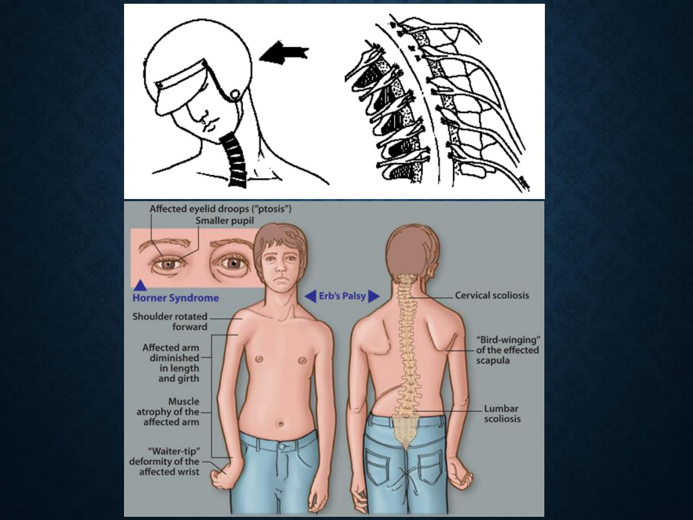
10 · Por que a escápula alada é rara na lesão do plexo
⚠️ O raciocínio do professor sobre o torácico longo
O torácico longo é C5-C6-C7 — deveria cair junto na lesão alta, certo? Não: as raízes rompem na margem do escaleno, e o torácico longo já saiu ANTES e desceu pela parede do tórax. Por isso, escápula alada por lesão do plexo é rara (só nas avulsões pré-ganglionares). A escápula alada clássica é da lesão ISOLADA do torácico longo — tiro, facada, trauma na parede lateral do tórax (carregar peso, "operador de máquina, jogador de tênis"). Alguns livros a colocam na Erb; o professor explica por que normalmente não está lá.
11 · Klumpke: a paralisia baixa — e Horner
- PARALISIA BAIXA (Déjerine-Klumpke): C8-T1 (tronco inferior) — mecanismo: abdução excessiva/tração para cima (queda segurando a barra; parto de nádegas).
- 🎯 A postura invertida da Erb: COTOVELO FLETIDO (tríceps paralisado — o radial baixo é C8-T1; o bíceps C5-C6 está livre) + antebraço SUPINADO (pronadores comprometidos) + MÃO EM GARRA (intrínsecos ulnar/mediano paralisados) + 🎯 SEM reflexo de PREENSÃO PALMAR.
- Reflexos BICIPITAL e ESTILORRADIAL PRESENTES (C5-C6 íntegros — o braquiorradial e o ramo superficial do radial vêm de cima); tricipital AUSENTE.
- Nervos: ulnar, mediano (mão), interósseo anterior e radial (parte baixa).
🎯 Klumpke = SÍNDROME DE HORNER
T1 leva as fibras simpáticas ao gânglio ESTRELADO (cervicotorácico). Lesão baixa/avulsão de T1 → PTOSE + MIOSE (Horner). Por que a ptose? O simpático inerva o músculo tarsal — e, na leitura didática do professor, a pálpebra cai "para proteger o olho que perdeu as glândulas": o simpático cervical inerva TODAS as glândulas da cabeça (lacrimal, salivares), não só a pupila. Na Erb alta o T1 escapa; na Klumpke e na completa, Horner vem junto.
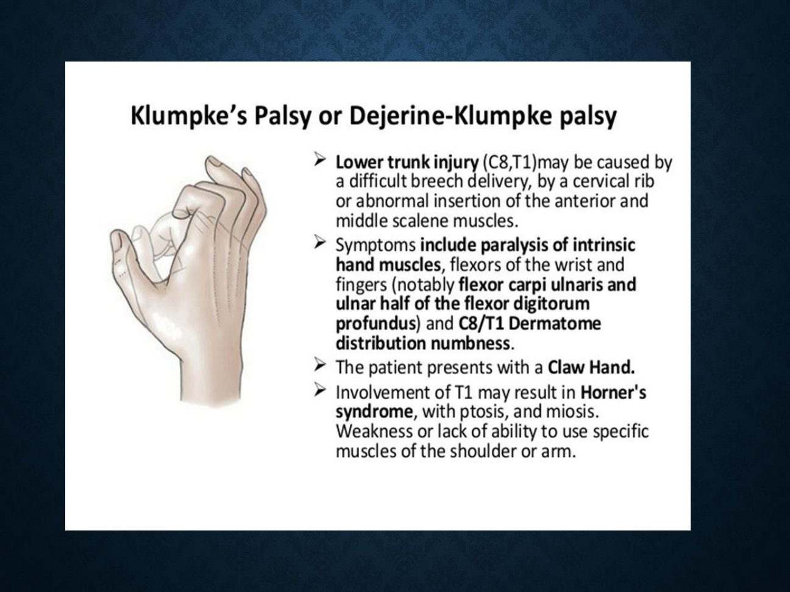
12 · Paralisia braquial obstétrica (PBO)
- Tração ou compressão do plexo nas manobras de parto — separação forçada cabeça-ombro (Erb) ou tração com o braço para cima / parto de nádegas (Klumpke). Fatores: RN grande + mãe pequena, parto prolongado, crânio volumoso.
- 🎯 Erb-Duchenne = ~75–90% das PBO (paralisia alta C5-C6, arreflexia bicipital); Klumpke é a menos comum (baixa, C8-T1, cotovelo fletido, sem preensão palmar). 🎯 As fibras superiores são as que mais sofrem neurotmese e avulsão.
- O fórceps de antigamente lesava também o FACIAL: o recém-nascido não tem processo mastoide — o nervo emerge desprotegido atrás da orelha.
- No bebê com avulsão completa não há muito a operar precocemente — a mielinização só completa por volta dos 2 anos.
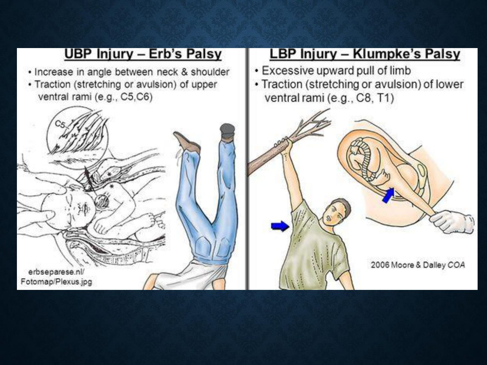
13 · Paralisia completa (Erb-Klumpke)
- C5 a T1 — o membro inteiro flácido, com TODOS os reflexos ausentes; com o tempo, atrofia global (a posição final é a que o tônus residual determinar). É a mais grave — na prática, só um enxerto completo de plexo tentaria reverter.
- A lesão mais frequente nessa forma: ruptura de C5-C6-C7 + AVULSÃO de C8-T1. E nem toda completa é trauma: neoplasias e doenças desmielinizantes periféricas também destroem o plexo.
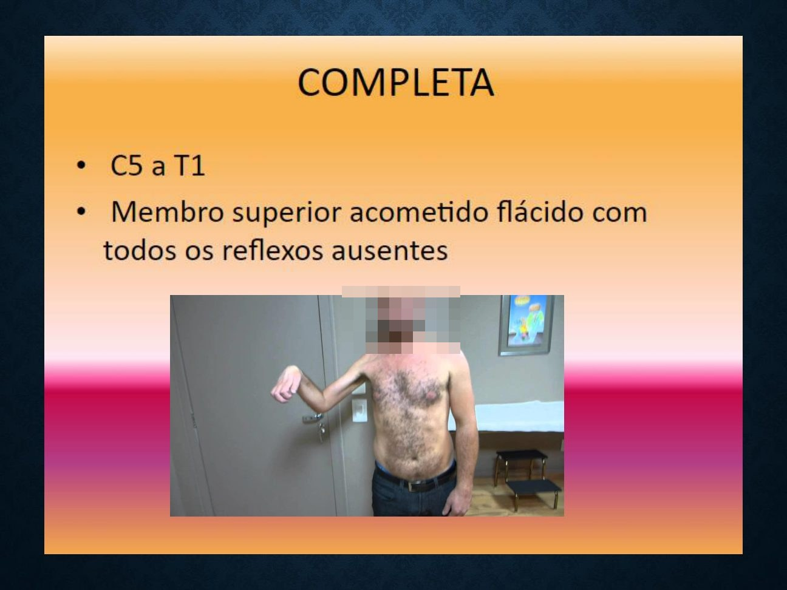
14 · Musculocutâneo e a sensibilidade da mão (com Leonardo)
- Lesão isolada do MUSCULOCUTÂNEO: 🎯 sem reflexo bicipital + parestesia anterolateral do antebraço (o cutâneo lateral do antebraço é a continuação sensitiva dele) + fraqueza de flexão E de supinação (o bíceps é supinador potente — sobra uma supinação lenta pelo supinador próprio).
- 🎯 Mapa sensitivo da mão (nunca esquecer): 1º, 2º, 3º dedos + metade LATERAL do 4º = MEDIANO · 5º + metade MEDIAL do 4º = ULNAR. Teste com estilete: anestesia no indicador = neuropatia do mediano; no mínimo = ulnar. Sem paralisia, a sensibilidade é o teste das neuropatias periféricas.
🖋️ O dedo da aliança — Leonardo da Vinci, ~1500
Dissecando a mão, Leonardo descreveu os dois nervos digitais do 4º dedo — um vindo do mediano, outro do ulnar — e o batizou: dedo ANELAR, o dedo da ALIANÇA — a união dos dois nervos. E completou: à esquerda, esses nervos "se ligam ao coração" — o lado da união definitiva. Seiscentos anos depois, a aliança continua no mesmo dedo.
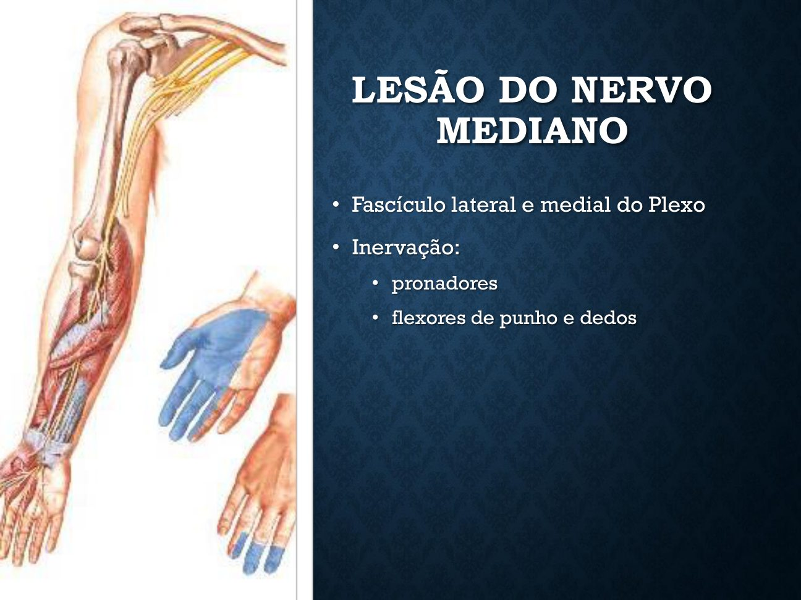
15 · Mediano: mão em bênção e as três compressões
- Lesão do MEDIANO (alta): ao fechar a mão, polegar e indicador não flexionam — 🎯 MÃO EM BÊNÇÃO (o "sinal da bênção"). Atrofia TENAR ("mão de macaco/achatada"), perda da OPONÊNCIA e da pinça, pronação caindo (pronadores redondo e quadrado). Punho: desvio ulnar (flexor ulnar preservado). Lesões de PUNHO pegam muito o mediano — ele é o mais superficial ali.
- 🎯 Não confundir: MÃO EM BÊNÇÃO = MEDIANO (ao tentar fechar) × MÃO EM GARRA = ULNAR (em repouso).
- As TRÊS síndromes compressivas do mediano: 1) INTERÓSSEO ANTERIOR (no arco tendíneo do flexor superficial dos dedos — fraqueza da flexão do polegar-indicador-médio, dor proximal) · 2) PRONADOR REDONDO (entre as duas cabeças do músculo) · 3) TÚNEL DO CARPO (tópico 16).
- Corte de nervo digital comum na palma: perde a sensibilidade do dedo, não a motricidade — 🎯 os flexores estão no ANTEBRAÇO; a flexão interfalângica é do flexor profundo + LUMBRICAIS. (Por isso a garra ulnar ainda "dobra": o flexor profundo dos 3 primeiros é mediano, intacto.) Reconstrução digital com enxerto de sural funciona bem.
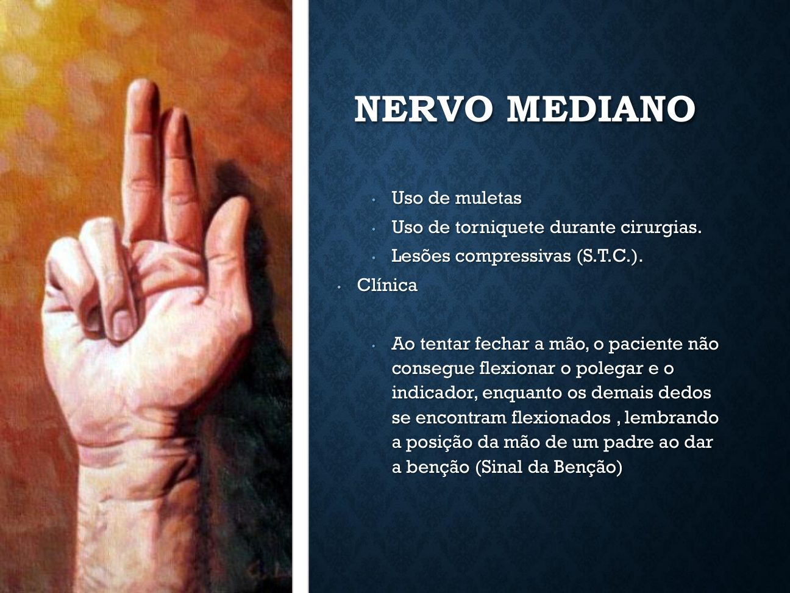
16 · Túnel do carpo: dor, não paralisia
- A mononeuropatia compressiva mais comum. Etiologia principal: tendossinovite inespecífica dos flexores apertando o mediano sob o retináculo.
- 🎯 Clínica: DOR + PARESTESIA dos 3 dedos e meio laterais, pior à NOITE (o paciente acorda e "sacode as mãos" — melhora a perfusão do nervo), dificuldade de fechar a mão, hipoestesia palmar. A motricidade grossa está preservada: os flexores longos estão no ANTEBRAÇO — o túnel só compromete a musculatura TENAR e os intrínsecos que o mediano dá na mão.
- O túnel: 🎯 9 tendões + o mediano (flexor longo do polegar + 4 superficiais + 4 profundos) sob o retináculo dos flexores. A incisão/infiltração segue a projeção da linha do polegar na palma. Tratamento: infiltração com corticoide → cirurgia (abrir o retináculo).
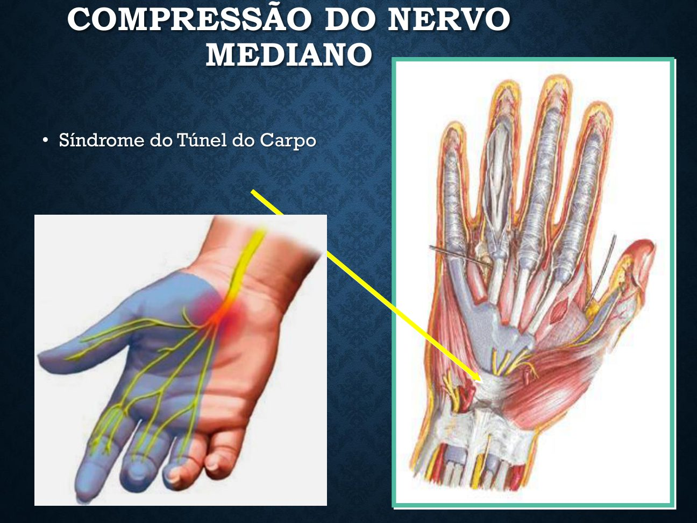
17 · Ulnar: garra, túnel cubital e canal de Guyon
- Lesão do ULNAR: 🎯 MÃO EM GARRA (semigarra ulnar) — anular e mínimo hiperestendidos na metacarpofalângica e fletidos nas interfalângicas (os LUMBRICAIS mediais pararam; o flexor profundo desses dedos — metade ulnar — puxa). Atrofia HIPOTENAR e dos interósseos (o vale entre indicador e polegar afunda: 1º interósseo dorsal + adutor do polegar). Sensibilidade: 5º dedo + metade medial do 4º.
- Compressões: 🎯 TÚNEL CUBITAL no cotovelo (atrás do epicôndilo medial — o nervo mais superficial e exposto do corpo; "60% de toda cirurgia de nervo periférico é ulnar no cotovelo — depois vem o ciático") · CANAL DE GUYON no punho (entre pisiforme e hâmulo do hamato — a aponeurose própria que os livros modernos já incluem).
- Acesso cirúrgico do ulnar no cotovelo é o mais fácil que existe — "uma incisãozinha e ele está exposto".
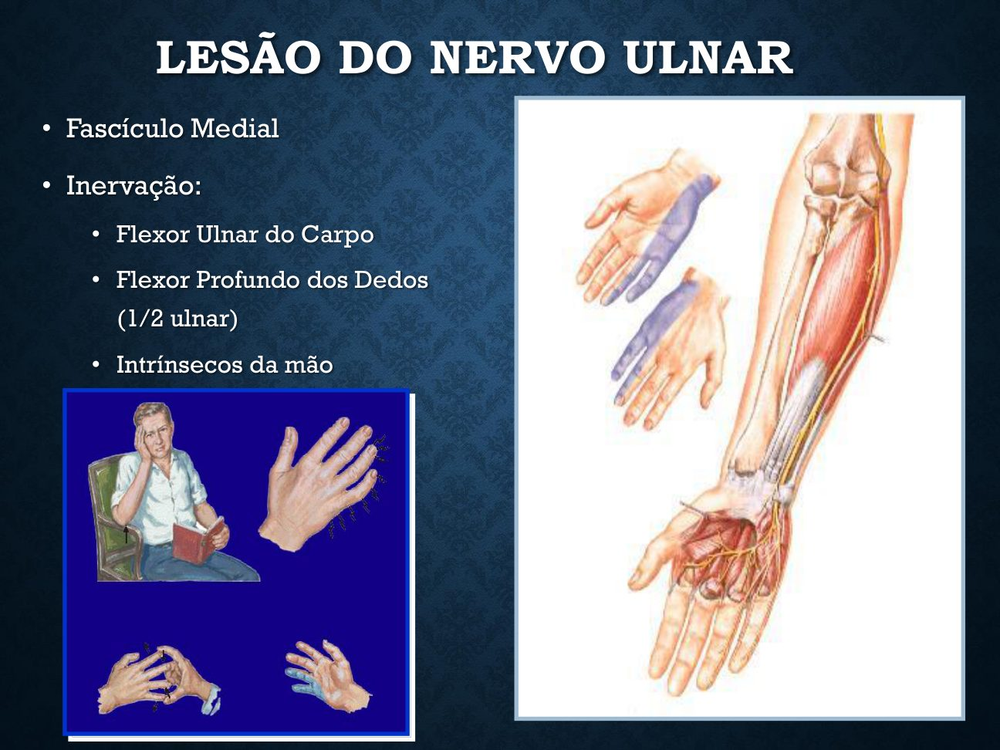
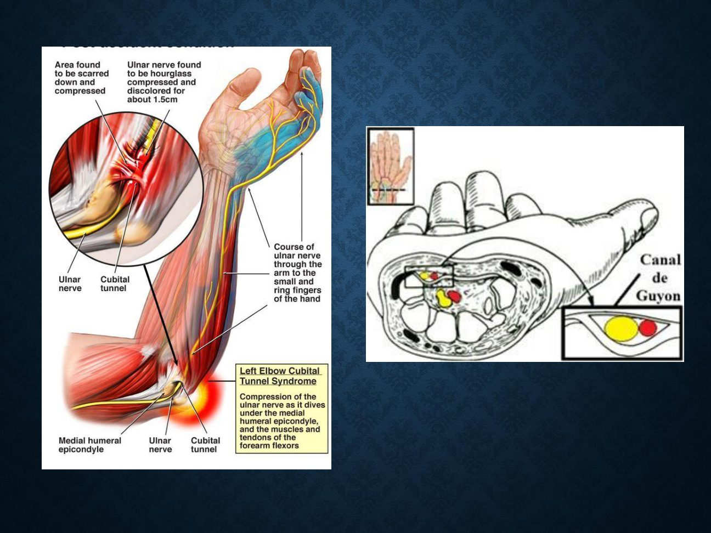
18 · Radial: o dono do compartimento posterior
- 🎯 Conceito para levar: o RADIAL inerva TODA a musculatura POSTERIOR do membro superior — braço (tríceps) e antebraço (extensores).
- A lesão isolada mais comum: FRATURA DO TERÇO MÉDIO DO ÚMERO (o nervo abraça o osso no sulco espiral). Também: muletas, "paralisia do sábado à noite" (dormir sobre o braço). Clínica: MÃO CAÍDA (sem extensão de punho/dedos), sem extensão do cotovelo se a lesão for alta (tríceps), sensibilidade: dorso da mão entre polegar e indicador (alteração mais típica é o punho caído; a área sensitiva mais constante é essa).
- 🎯 Lesão do INTERÓSSEO POSTERIOR (próximo ao epicôndilo lateral, no supinador): só motora — cai a extensão dos dedos, mas o extensor radial longo escapa → extensão do punho COM DESVIO RADIAL (não é mão caída completa).
- Identificação na peça (4 pontos): 1) na saída do plexo (fascículo posterior) · 2) entre as cabeças do tríceps · 3) no supinador · 4) na divisão em ramo PROFUNDO (= interósseo posterior) + ramo SUPERFICIAL (sensitivo, ao lado do braquiorradial). ⚠️ Não confundir o ramo superficial (posterolateral) com o cutâneo lateral do antebraço (anterolateral, do musculocutâneo).
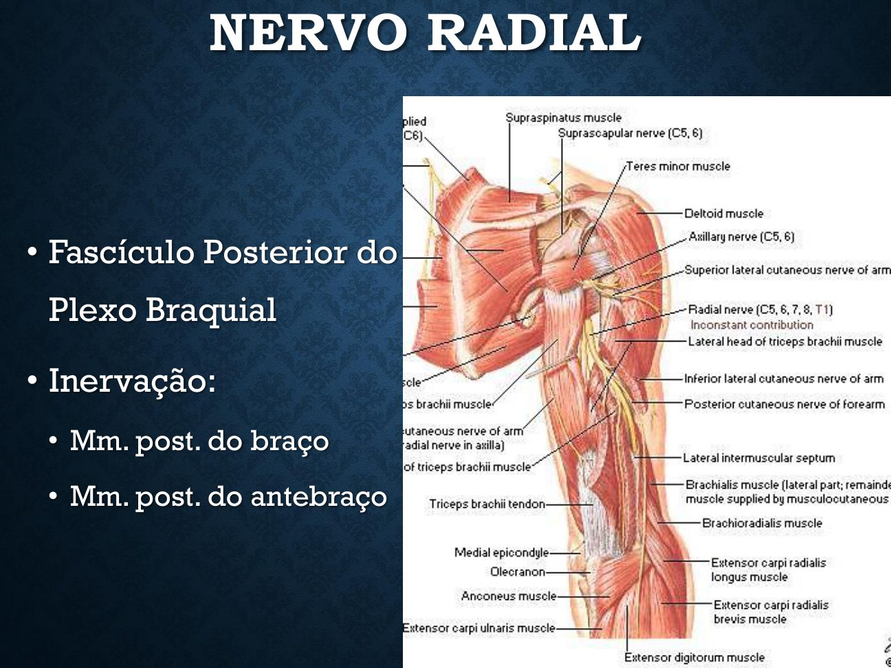
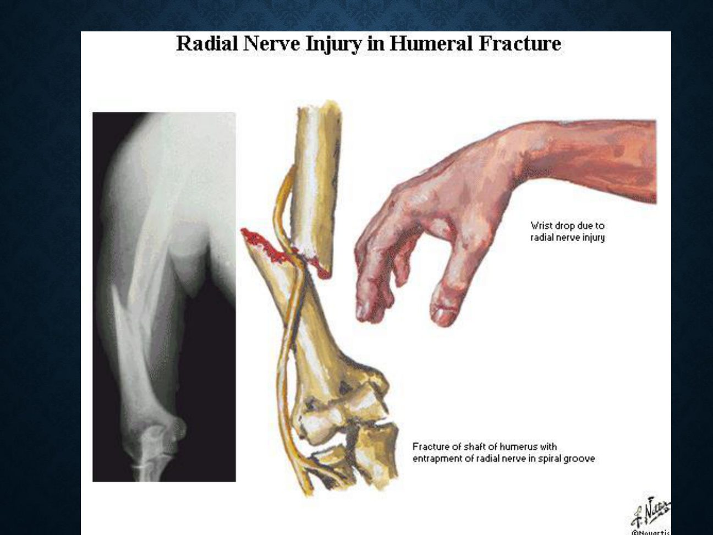
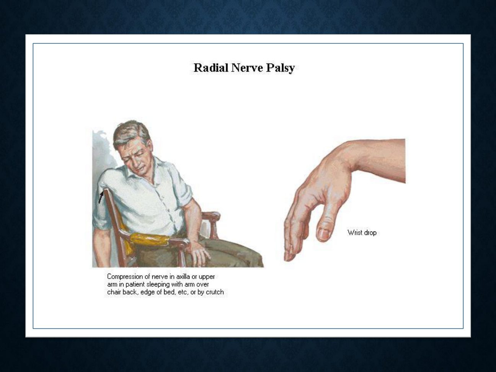
19 · Resumo rápido
- Estrutura: epineuro → perineuro (fascículo) → endoneuro (axônio + SCHWANN = regeneração; central não regenera). Neurorrafia sutura o "tecido condutivo"; a ordem das fibras se perde → fisioterapia. Regeneração 1–2 mm/dia; reinervar em 1–3 meses; nada após 3 anos; fibrose muscular aos 3 meses.
- Enxertos: SURAL (o doador), safeno, cutâneos do antebraço; melhor enxerto que sutura sob tensão.
- Tipos: NEUROPRAXIA (condução, temporária — mochila, paralisia facial) · AXONOTMESE (axônio parcial) · NEUROTMESE (rotura). Plexo: +90% traumáticas, supraclaviculares, rompem na margem do escaleno; PRÉ-ganglionar (avulsão no forame) = gravíssima.
- Plexo: troncos C5-6/C7/C8-T1 (pré-fixado C4, pós-fixado T2); posteriores todos → fascículo POSTERIOR completo; lateral C5-C7; medial C8-T1. Terminais: musculocutâneo C5-C7 (vira cutâneo lateral), axilar C5-C6, radial completo, mediano sem C5, ulnar C8-T1.
- ERB (alta, C5-C6±C7): 80-90%, melhor prognóstico; ombro rodado interno + cotovelo estendido + punho fletido = MÃO DO GARÇOM; sem bicipital. Escápula alada é RARA (torácico longo já desceu).
- KLUMPKE (baixa, C8-T1): cotovelo FLETIDO + supinado + GARRA + sem preensão palmar; bicipital/estilorradial presentes, tricipital ausente; T1 → gânglio estrelado → HORNER.
- PBO: Erb ~75-90%; RN grande + mãe pequena; fórceps antigo lesava o facial (sem mastoide); COMPLETA = flácido arreflexo (ruptura C5-C7 + avulsão C8-T1).
- Mediano: sensibilidade 3½ dedos laterais; MÃO EM BÊNÇÃO; 3 compressões (interósseo anterior, pronador redondo, TÚNEL DO CARPO — dor noturna + parestesia, motricidade preservada, 9 tendões + nervo). Digital comum cortado: só sensibilidade.
- Ulnar: GARRA + atrofia hipotenar; túnel CUBITAL (60% das cirurgias de periférico) e canal de GUYON.
- Radial: TODO o compartimento posterior; fratura do terço médio do úmero = mão caída; interósseo posterior = extensão com desvio radial; 4 pontos de identificação (plexo, tríceps, supinador, divisão).
🗺️ Resumão Pré-Prova — Lesões Nervosas do MS
Revisão da véspera · Anatomia Topográfica · Aula 09 · só o que foi enfatizado
- Bainhas: EPINEURO → PERINEURO (fascículo) → ENDONEURO (axônio + célula de SCHWANN) — Schwann = por que o periférico REGENERA (central: oligodendrócito, não regenera).
- Números: regeneração 1–2 mm/dia · reinervar em 1–3 meses · fibrose muscular aos 3 meses · nada após 3 anos.
- Neurorrafia (epineural/perineural) = suturar o tecido condutivo p/ canalizar; a ordem das fibras se perde → fisioterapia p/ o cérebro reaprender.
- Enxertos: SURAL (o doador), safeno, cutâneos do antebraço · melhor enxerto que sutura sob TENSÃO · leito vascularizado (vasa nervorum).
- NEUROPRAXIA (condução; mochila, paralisia facial periférica) · AXONOTMESE (axônio parcial) · NEUROTMESE (rotura total).
- Troncos: SUPERIOR C5-C6 · MÉDIO C7 · INFERIOR C8-T1 · pré-fixado = C4 · pós-fixado = T2 (o do cadáver, c/ intercostobraquial).
- Fascículos: POSTERIOR = C5–T1 (completo) · LATERAL = C5-C7 · MEDIAL = C8-T1 — lateral e medial "abraçam" a artéria axilar.
- Terminais: musculocutâneo C5-C7 (vira cutâneo lateral do antebraço na fossa cubital) · axilar C5-C6 · radial COMPLETO · mediano SEM C5 · ulnar C8-T1.
- Lesões: +90% traumáticas, SUPRACLAVICULARES (rompem na margem do escaleno) · PRÉ-ganglionar = avulsão no forame = gravíssima · pós = operável.
| ERB-DUCHENNE (alta) | KLUMPKE (baixa) | |
|---|---|---|
| Raízes | C5-C6 (±C7) — 80–90%, melhor prognóstico | C8-T1 — menos comum |
| Mecanismo | separação cabeça×ombro (parto, queda no ombro) | tração c/ braço p/ cima; parto de nádegas |
| Postura | rodado interno + cotovelo ESTENDIDO + punho fletido = MÃO DO GARÇOM | cotovelo FLETIDO + supinado + MÃO EM GARRA |
| Reflexos | bicipital AUSENTE | bicipital/estilorradial presentes · tricipital ausente · SEM preensão palmar |
| Extra | escápula alada RARA (torácico longo já desceu) | 🎯 T1 → gânglio ESTRELADO → HORNER |
- COMPLETA (Erb-Klumpke): C5–T1, membro flácido, todos os reflexos ausentes; típica = ruptura C5-C7 + AVULSÃO C8-T1.
- PBO: Erb ~75-90% · RN grande + mãe pequena · fórceps antigo lesava o FACIAL (RN sem mastoide) · bebê: mielinização completa só ~2 anos.
- Musculocutâneo: sem bicipital + parestesia anterolateral do antebraço + fraqueza de flexão E SUPINAÇÃO (bíceps supina).
- Sensibilidade da mão: 1º-3º + ½ lateral do 4º = MEDIANO · 5º + ½ medial do 4º = ULNAR (dedo anelar = "dedo da aliança" de Leonardo). Sem paralisia → testar SENSIBILIDADE.
- MEDIANO: MÃO EM BÊNÇÃO (ao fechar) · atrofia TENAR, perde oponência/pinça · 3 compressões: interósseo anterior · pronador redondo · TÚNEL DO CARPO.
- TÚNEL DO CARPO: DOR + parestesia 3½ dedos, PIOR À NOITE (sacode a mão), motricidade preservada (flexores no antebraço; só tenar sofre) · 9 tendões + nervo · tendossinovite · infiltração na linha do polegar.
- Digital comum cortado = só sensibilidade (flexão = flexor profundo + LUMBRICAIS).
- ULNAR: GARRA (4º-5º MF hiperestendidos + IF fletidas) + atrofia HIPOTENAR/interósseos · túnel CUBITAL (60% das cirurgias de periférico!) · canal de GUYON (pisiforme-hamato).
- RADIAL: TODA a musculatura POSTERIOR · lesão isolada mais comum = fratura do TERÇO MÉDIO do úmero → MÃO CAÍDA · interósseo posterior = extensão c/ desvio radial · 4 pontos na peça: plexo, cabeças do tríceps, supinador, divisão (profundo=interósseo posterior / superficial=sensitivo).
| Par | A diferença-chave |
|---|---|
| Mão em BÊNÇÃO × em GARRA | MEDIANO (ao tentar fechar) × ULNAR (em repouso) |
| Erb × Klumpke (cotovelo) | ESTENDIDO (perdeu o bíceps) × FLETIDO (perdeu o tríceps) |
| Horner: em qual paralisia? | KLUMPKE/completa (T1 → estrelado) — não na Erb pura |
| Neuropraxia × axonotmese × neurotmese | condução × axônio parcial × rotura total |
| Pré × pós-ganglionar | avulsão no forame (gravíssima) × rotura distal (operável) |
| Túnel do carpo × lesão do mediano | DOR/parestesia com motricidade preservada × bênção + tenar atrofiada |
| Escápula alada | lesão ISOLADA do torácico longo (tórax) — rara na lesão do plexo |
| Ramo superficial do radial × cutâneo lateral do antebraço | posterolateral (radial) × anterolateral (musculocutâneo) |
| Interósseo anterior × posterior | do MEDIANO (flexão 1º-3º) × do RADIAL (extensores; punho c/ desvio radial) |
| Redondo maior × menor | subescapulares (fasc. posterior) × AXILAR |
Banco de Questões — Lesões Nervosas do MS
Anatomia Topográfica · Aula 09 · estilo ENADE/residência.